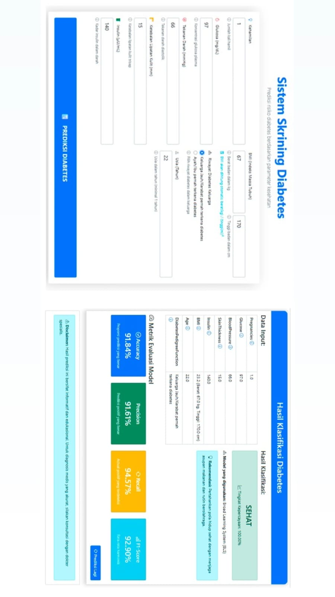
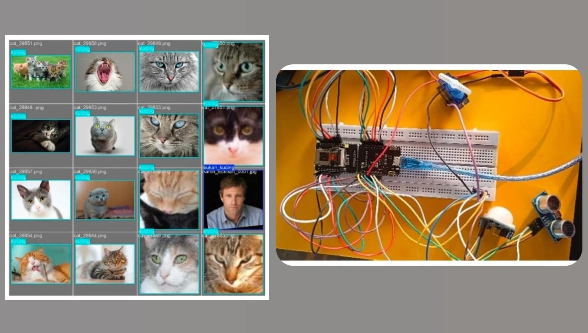
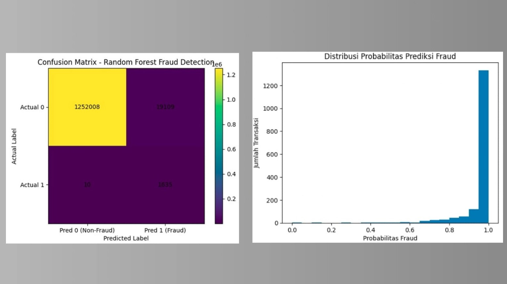

Projects
Proyek-proyek yang telah dikerjakan

Machine LearningKlasifikasi Risiko Diabetes Berbasis Broad Learning System dan SMOTE-ENN
Mengklasifikasikan risiko diabetes menggunakan Broad Learning System yang dikombinasikan dengan teknik oversampling SMOTE-ENN untuk menangani ketidakseimbangan data. Dilakukan evaluasi performa model menggunakan metrik accuracy, precision, recall, dan F1-score serta diimplementasikan kedalam sebuah web flask. Berhasil menunjukan hasil akhir Akurasi sebesar 92.97%.
Python
Classification
Pandas
NumPy
SMOTE-ENN
Scikit-learn

AIOTSistem Smart Cat Feeder berbasis AI dan IoT
Dirancang untuk mengotomatisasi manajemen pemberian pakan kucing secara cerdas dan efisien. Menggunakan ESP32-CAM sebagai mikrokontroler utama sekaligus modul kamera, sistem ini mengintegrasikan model Deep Learning YOLOv8 untuk mengenali kehadiran kucing secara akurat. Fitur utama meliputi pemantauan kondisi pakan melalui sensor ultrasonik, deteksi aktivitas sekitar via sensor gerak, serta kendali manual melalui Telegram Bot. Proyek ini telah sukses diimplementasikan dan diuji secara menyeluruh serta mendapatkan akurasi deteksi AI yang tinggi.
ESP32-CAM
Yolov8
Ultrasonic Sensor
Telegram Bot
Arduino
 Web Development
Web Development
Yakes Medis Website– Manajemen data pasien
Pengembangan aplikasi website rekam medis pasien dengan CRUD data dummy yang mengusung nama yayasan kesehatan telkom. Dirancang untuk mensimulasikan sistem manajemen data pada lingkungan Yayasan Kesehatan Telkom. Sistem mencakup pengelolaan data pasien, data obat, riwayat medis, serta laporan rekam medis berupa pdf, antarmuka disusun menggunakan PHP native dengan database MySQL untuk mendukung efisiensi operasional pengguna.
PHP
MySQL
HTML/CSS
Bootstrap
JavaScript
 Unsupervised Learning
Unsupervised Learning
Dashboard Jaringan Menara BTS dengan menggunakan Tableau
Berhasil membangun dashboard interaktif untuk mendukung pengambilan keputusan pada performa jaringan menara tower BTS. Terdiri dari beberapa visualisasi karakteristik pengguna dalam jangka waktu satu tahun dengan jumlah data performa jaringan lebih dari 10 juta data. Proses mencakup preprocessing data mentah, pemilihan model clustering K-Means, ekspor dataset insight hasil preprocessing, dan interpretasi hasil cluster kedalam sebuah aplikasi Tableau.
Python
PyCaret
Big Data
Matplotlib
Tableau
Pandas

Machine LearningAnalisis penipuan pada riwayat transaksi keuangan berbasis Random Forest dan PySpark
Menganalisis lebih dari 6,3 juta data transaksi keuangan pada dataset PaySim untuk mendeteksi aktivitas mencurigakan menggunakan PySpark. Proses mencakup data cleaning, transformasi fitur, normalisasi data, serta penanganan ketidakseimbangan kelas menggunakan teknik class weight pada algoritma Random Forest. Model yang dibangun berhasil mencapai akurasi 98,49%, F1-Score 99,13%, dan Recall Fraud 99,39%, sehingga mampu mendeteksi sebagian besar transaksi fraud dengan tingkat kesalahan yang sangat rendah.
Python
Classification
PySpark
Big Data
Matplotlib
Pandas